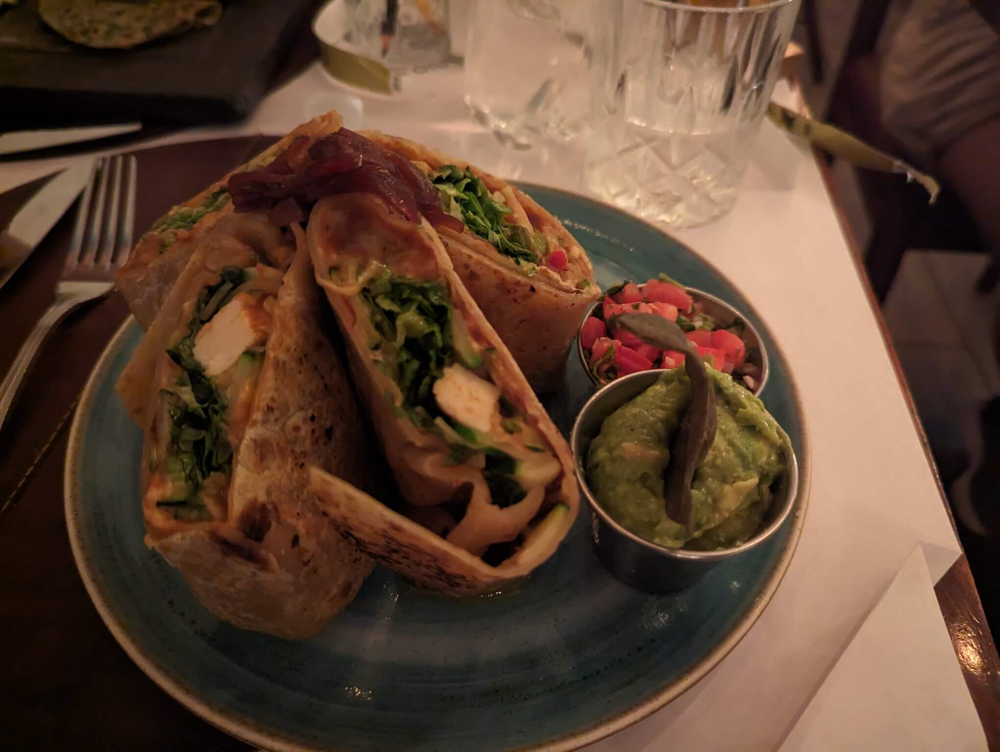
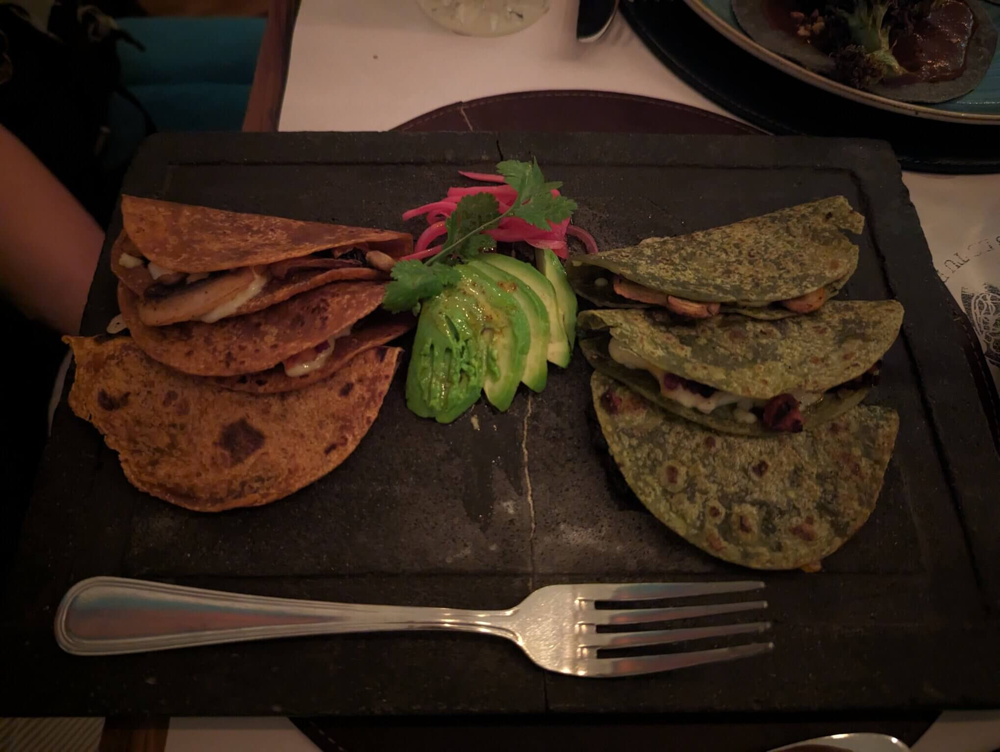
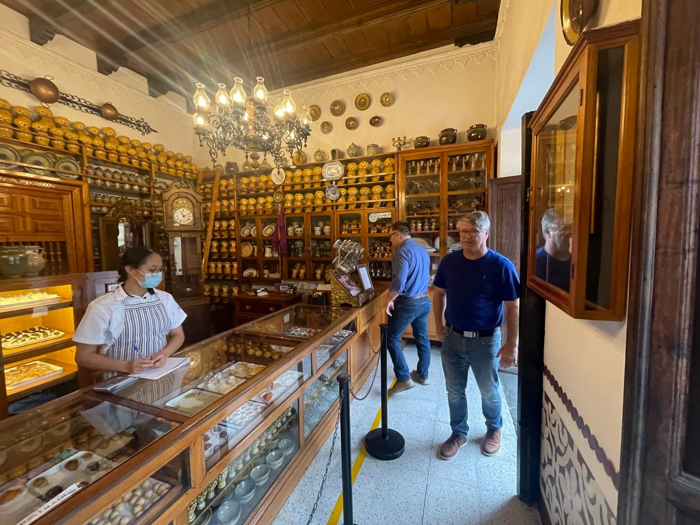
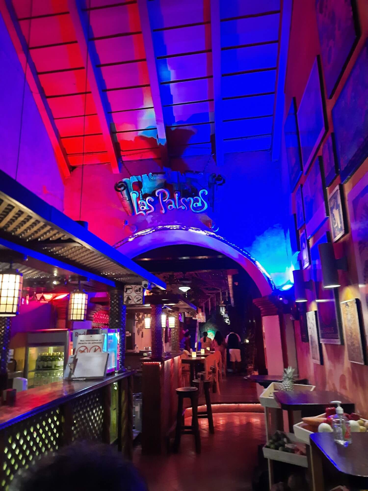
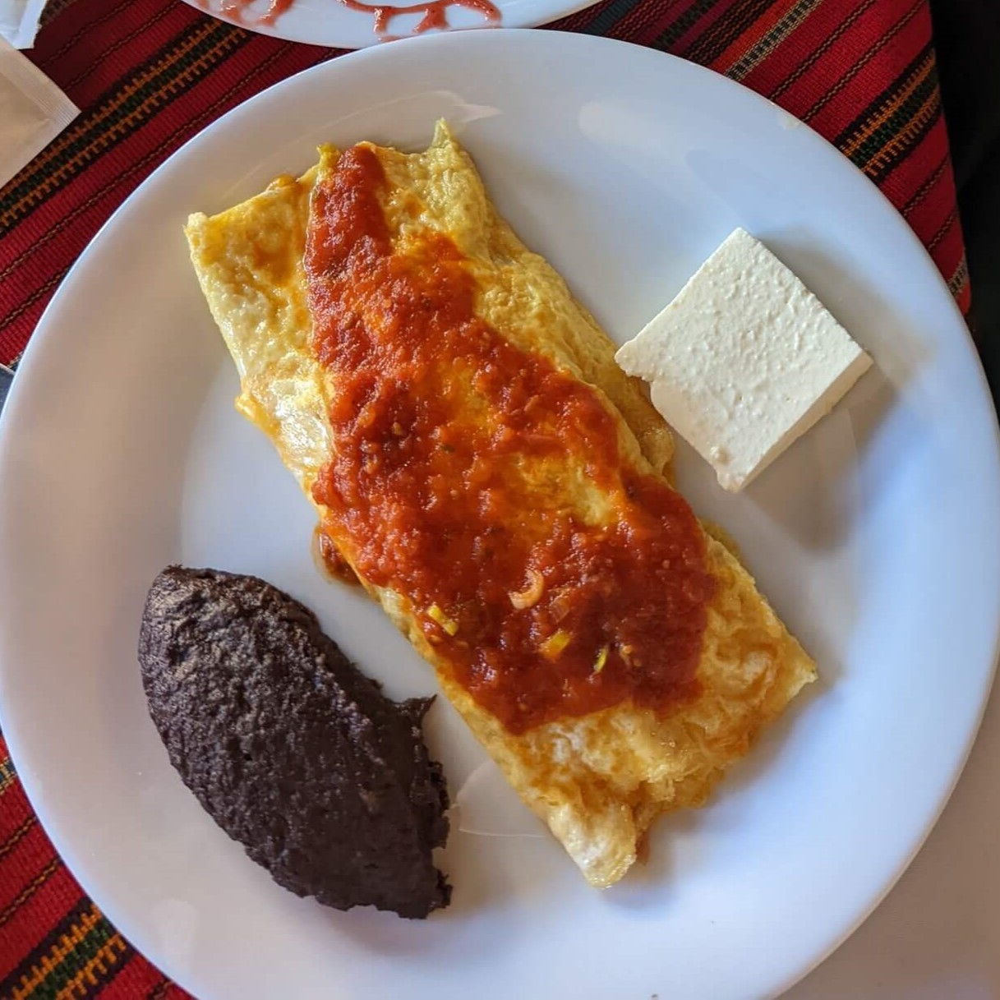

Food
The culinary scene of Guatemala has something for food enthusiasts and those who just like to eat. Fridas, a Mexican-themed restaurant in Antigua, pays homage to Frida Kahlo with self-portraits adorning its walls. The ambiance is as delightful as the cuisine.. For an iconic Guatemalan experience, Pollo Campero stands out as the go-to destination, celebrated for its local fried chicken.. Dona Maria Gordillo Dulces Tipicos, a traditional candy shop offering handcrafted Guatemalan sweets. These are just a few amazing places in Antigua you find amazing eats.

Fridas, mexican food in Guatemala
Named after the famous Mexican painter Frida Kahlo. Self portraits of Freda adorn the walls of this unique restaurant set on the main street just a block from Iglesia de La Merced. From tacos to flan the food matches the amazing ambiance.
Pollo Campero
You can’t go to Guatemala without trying their famous fried chicken. If fried chicken is not in your diet they have limon grilled chicken. With sides common of a fried chicken restaurant they offer mac and cheese, campero rice, beans, coleslaw and french fries. All meals come with your choice of dinner roll or tortillas. This is the McDonald's of Guatemala!

Doña Maria Gordillo Dulces Tipicos
Started by a local family in 1872 this traditional candy shop offers typical Guatemala hand-made sweets. Ever wondered what candied figs taste like, or mazapan? You can’t come to Antigua without stopping by this amazing shop.

Las Palmas
If you like live music you will love Las Palmas. This restaurant bar offers a mix of food from tacos to family BBQ with pasta and curry, you are sure to find something you will like. This is also the place when you're in the mood for dessert. They have a variety of cakes and ice creams.
